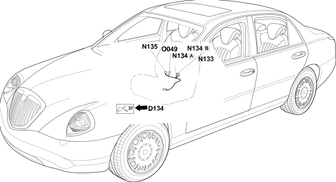

125 right front seat backrest bridge
- Path
- Electrical equipment > Wiring > 125 right front seat backrest bridge
- Kind
- wiring harness
- Applies to
- all engines; all production periods
- Interactive page
- https://sloeber94.github.io/elrnDB-lThss/en/#/838899
Applies to: all engines; all production periods

Topics that link to this page (6)
- D134 Right front backrest cushion coupling(RIGHT SEAT)
- N133 Right front seat lumbar adjustment motor(RIGHT FRONT SEAT BACKREST BRIDGE)
- N134A Right front seat head restraint motor(RIGHT FRONT SEAT BACKREST BRIDGE)
- N134B Right front seat head restraint motor(RIGHT FRONT SEAT BACKREST BRIDGE)
- N135 Right front seat backrest motor(RIGHT FRONT SEAT BACKREST BRIDGE)
- O049 Right front backrest heater pad(RIGHT FRONT SEAT BACKREST BRIDGE)